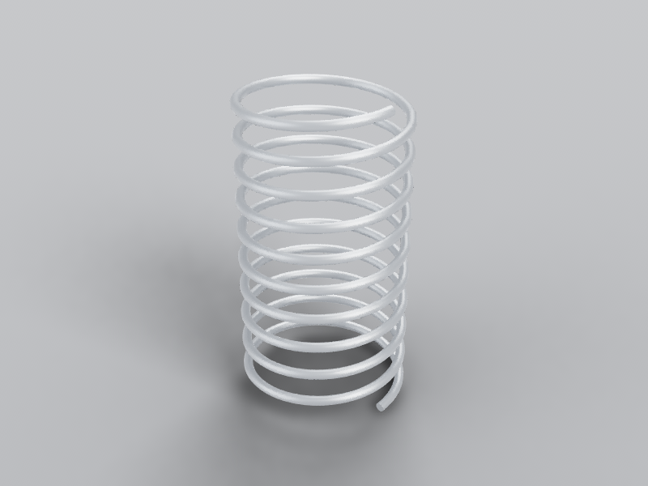

#Examples
Models written with @cad/sdk. Run one with cad run examples/<file>.ts; each prints its
document id and viewer page.

arm
A 2-link arm: a turntable on a base, an upper arm on a shoulder, a forearm on an elbow riding on it. Each joint moves everything after it. Run: cad run examples/arm.ts, then pose i…
examples/arm.tsblinky_pcb
A circuit board: an LED blinker powered from USB-C. A 555 timer in astable mode flashes the LED about once a second (R1 10k, R2 47k, C1 10u), the two 5.1k resistors on CC1/CC2 ask …
examples/blinky_pcb.ts
bracket
An L-bracket: a base and an upright, an inside fillet, mounting holes in both legs and rounded front corners. Run: cad run examples/bracket.ts
examples/bracket.ts
enclosure
A two-part enclosure: a shelled base with screw bosses and a lid with a locating lip, each its own model (to print or export alone) and together as an assembly. Run: cad run exampl…
examples/enclosure.tsesp32_pcb
A denser board, autorouted: an ESP32-C3 breakout on four layers. USB-C into a CH340C USB-serial bridge and an AMS1117 3.3 V regulator, EN and BOOT buttons, a status LED, and two 8-…
examples/esp32_pcb.ts
fasteners
The standard-parts library (`parts`): an M5 socket-head screw through a counterbored clearance hole in a plate, with a washer and a nyloc nut under it; a 608 bearing; a GT2 pulley;…
examples/fasteners.ts
gear
A spur-gear-like wheel: a hub with trapezoid teeth spread by a polar pattern, lightening holes and a keyed bore. (Straight-flank teeth, not a true involute.) Run: cad run examples/…
examples/gear.ts
gear_train
Gears and a rack coupled to one driver: posing the drive gear turns the idler the other way at the ratio of their radii and slides the rack by the pitch circle. A looping `run` ani…
examples/gear_train.ts
hinge_box
A box with a lid on a hinge along its back edge: a mechanism with one revolute joint, its limits found by `cad model ranges`, and two named poses. Run: cad run examples/hinge_box.t…
examples/hinge_box.ts
knob
A revolved control knob: a half-profile on the XZ plane spun about Z, a knurled rim, a D-shaft bore and a pointer groove. Run: cad run examples/knob.ts
examples/knob.ts
plate
A flat mounting plate drawn on z = 0: a 2D model to export as DXF (laser / waterjet), and the same profile extruded as a 3 mm part. Run: cad run examples/plate.ts (build…
examples/plate.ts
spring
Sweeps and lofts: a coil spring (a circle swept along a helix) and a square-to-round duct transition (a loft, shelled open at both ends). Run: cad run examples/spring.ts
examples/spring.ts